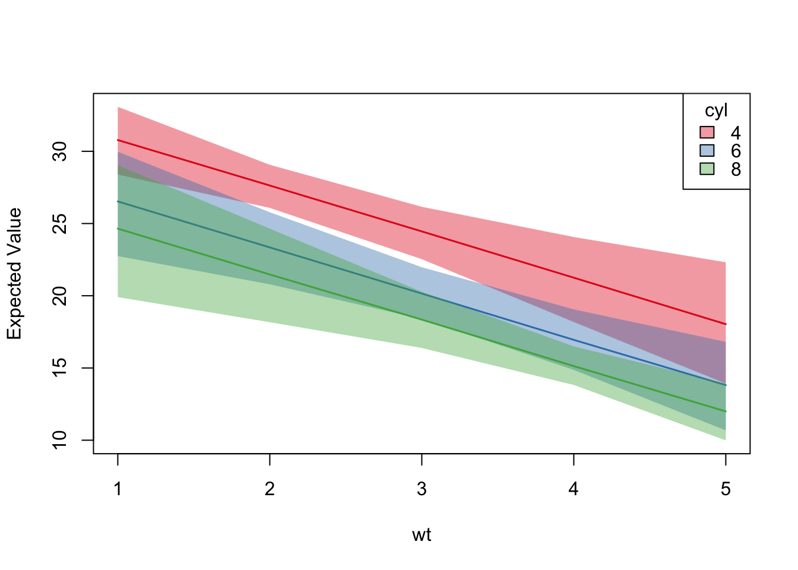

library(regsim)
data(mtcars)
mtcars$cyl <- as.factor(mtcars$cyl)model <- lm(mpg ~ wt + cyl, mtcars)
summary(model)##
## Call:
## lm(formula = mpg ~ wt + cyl, data = mtcars)
##
## Residuals:
## Min 1Q Median 3Q Max
## -4.5890 -1.2357 -0.5159 1.3845 5.7915
##
## Coefficients:
## Estimate Std. Error t value Pr(>|t|)
## (Intercept) 33.9908 1.8878 18.006 < 2e-16 ***
## wt -3.2056 0.7539 -4.252 0.000213 ***
## cyl6 -4.2556 1.3861 -3.070 0.004718 **
## cyl8 -6.0709 1.6523 -3.674 0.000999 ***
## ---
## Signif. codes: 0 '***' 0.001 '**' 0.01 '*' 0.05 '.' 0.1 ' ' 1
##
## Residual standard error: 2.557 on 28 degrees of freedom
## Multiple R-squared: 0.8374, Adjusted R-squared: 0.82
## F-statistic: 48.08 on 3 and 28 DF, p-value: 3.594e-11x <- list(
wt = seq(1, 5),
cyl = levels(mtcars$cyl)
)
sim <- regsim(model, x)
summary(sim)## wt cyl 2.5% 50% 97.5%
## 1 1 4 28.16024 30.71328 32.95949
## 2 2 4 25.87735 27.51758 28.96809
## 3 3 4 22.38437 24.28436 26.19653
## 4 4 4 18.14050 21.14946 24.01730
## 5 5 4 13.60481 17.98495 22.23135
## 6 1 6 22.66032 26.58250 30.03032
## 7 2 6 20.60471 23.40035 25.88481
## 8 3 6 18.23163 20.12526 21.97842
## 9 4 6 14.76836 16.94958 19.24656
## 10 5 6 10.27819 13.78754 17.17618
## 11 1 8 20.05955 24.67836 29.24761
## 12 2 8 18.32365 21.51470 24.69168
## 13 3 8 16.22225 18.33353 20.26412
## 14 4 8 13.82363 15.09136 16.38976
## 15 5 8 10.02655 11.87933 13.95875plot(sim, ~ wt + cyl, lines.col = "Set1", lines.lwd = 1.5)